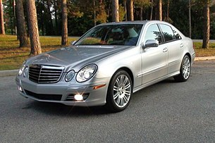
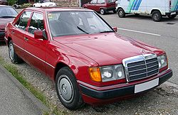

 Mercedes w211  Mercedes w124 Mercedes w124 Створити два рядки, текст в яких переміщується з різними режимами запізнення. Створити два рядки, текст в яких переміщується з різними режимами запізнення.